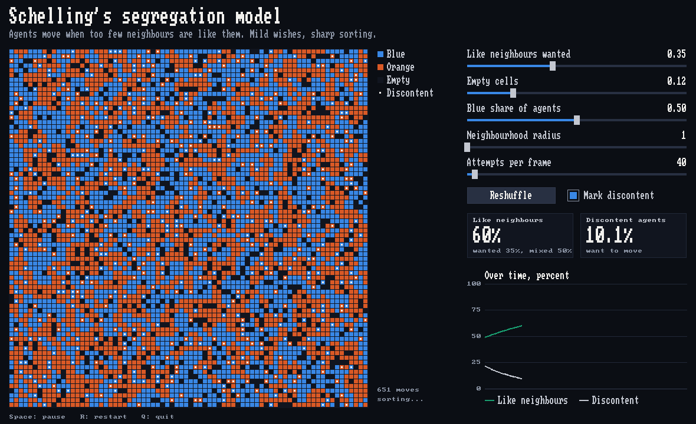
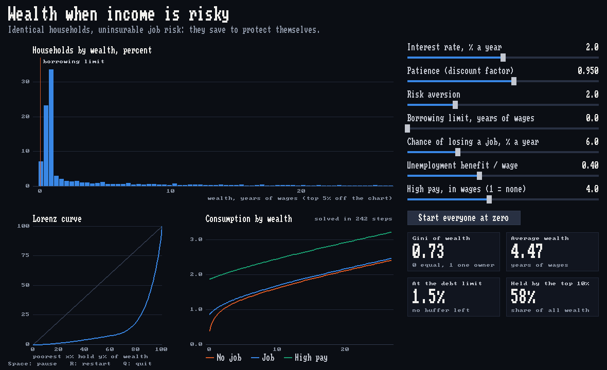
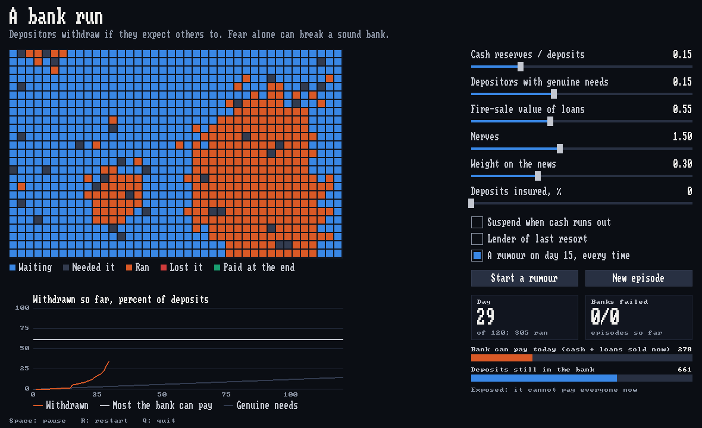
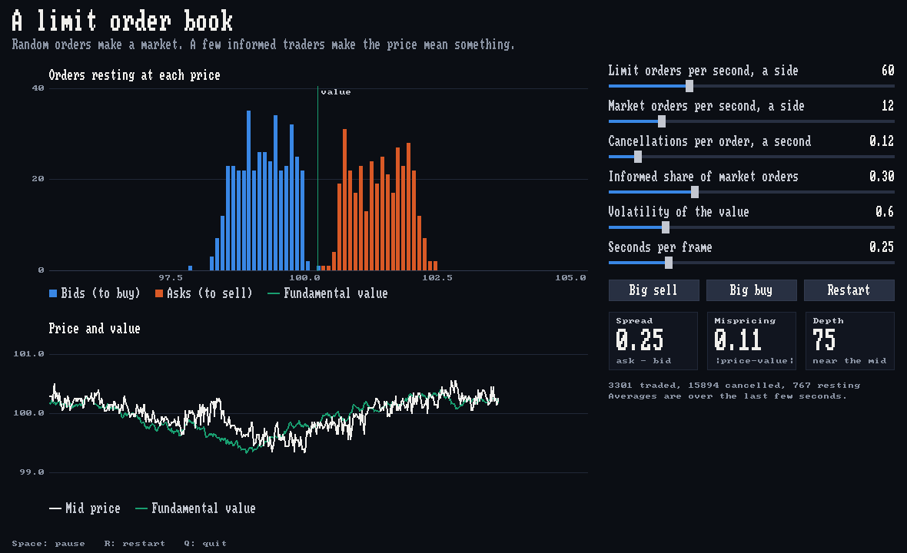

Economics you can watch
Four models from the economics curriculum, each as a small simulation with sliders. Every one is a single file of C that runs here as WebAssembly and builds as a native program from the same source. Move a slider and the model responds at once: nothing is recorded, everything is computed as you watch.

Schelling's segregation model
Agents who would happily live as a 35% minority still sort into neighbourhoods three-quarters their own kind.

Wealth when income is risky
Identical households, uninsurable job risk, optimal saving: a skewed wealth distribution built from luck alone.

A bank run
A rumour spreads through depositors until a solvent bank fails. Deposit insurance and a lender of last resort stop it.

A limit order book
Random orders produce a spread and depth; a few informed traders make the price follow fundamental value.